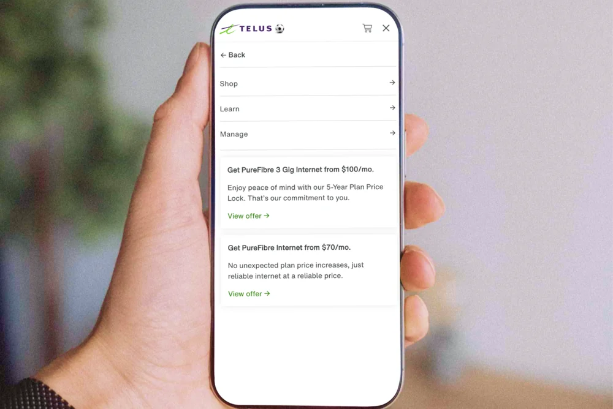
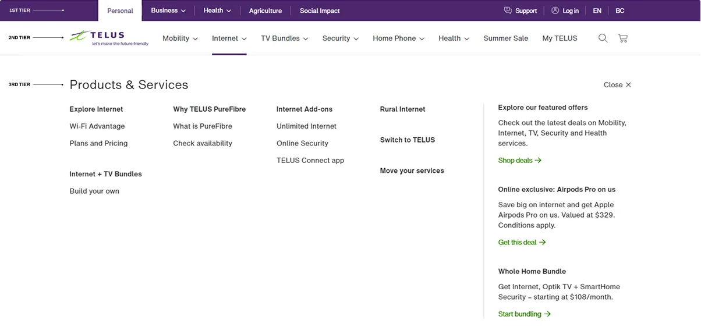
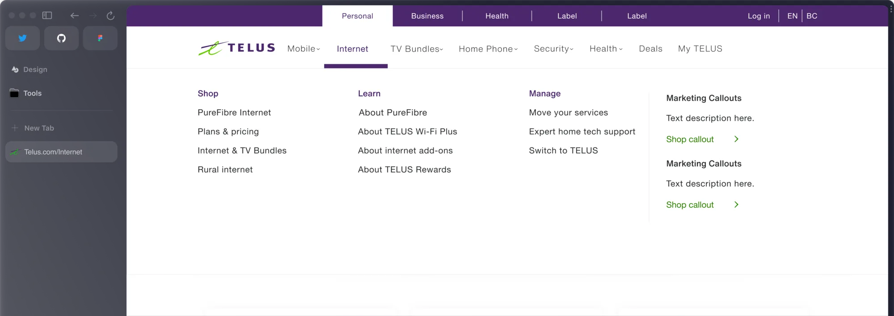

Telus: Enterprise IA Refresh
Redesigning the Telus meganav so prospective internet customers could find a plan without digging for one.

Problem
Telus's internet plans sat several layers deep in a legacy menu, and people were leaving before they ever saw a price. All Purpose Creative was brought in as a third-party design team, working with Telus's internal designers and the sales team that hired us.
01Audit
Pages were surfacing earlier than they should, and labels were doing two jobs at once.
I mapped click-through on every menu item in the internet flow to find where people dropped off. Our survey of 23 internet buyers across B.C. and Alberta backed it up: price and reliability came up in almost every answer, and so did jargon, unclear speeds and hidden fees. Ten of the 23 weren't the person who managed the household's internet, so the menu couldn't assume people knew what they needed.

1 2 302Restructure
Every menu item now does one of three jobs: help you buy, help you learn, or help you manage.
With the user researcher, I restructured the IA around what someone is trying to do rather than which team owns the page. Prospective customers identified with Learn far more than Manage, and the order followed that. Each label had to be recognisable, work on desktop and mobile, and match the page it led to.
03Test
Labels were settled by testing, not by opinion.
Review rounds questioned labels one at a time: would customers understand 'Move your services', did 'Plans and pricing' say the same thing twice, did the PureFibre name in a link help or just repeat itself. Ideas grounded in Telus's existing research went straight to A/B tests. The rest went to usability testing first, and every change had a go/no-go before development.
| Before | After | Job |
|---|---|---|
| Plans and Pricing | Plans & pricing | Shop |
| Why TELUS PureFibre / What is PureFibre | About PureFibre | Learn |
| Wi-Fi Advantage | About TELUS Wi-Fi Plus | Learn |
| Internet Add-ons | About internet add-ons | Learn |
| Move your services, among things to buy | Move your services | Manage |
04Launch
The internet flow came up out of the legacy navigation, with plans and pricing one click from the menu.
Shop, Learn and Manage now sit side by side on telus.com. I also recommended carrying the same labelling approach to mobile, where the menu has to say more in less space.

1 2 3Results
page visits after launch
Plans Page from the menu
What I learned
A menu is a set of promises to the user. Most of the drop-off came from labels promising too much, so the real work was deciding what each item promised, then organising them so they could be scanned.